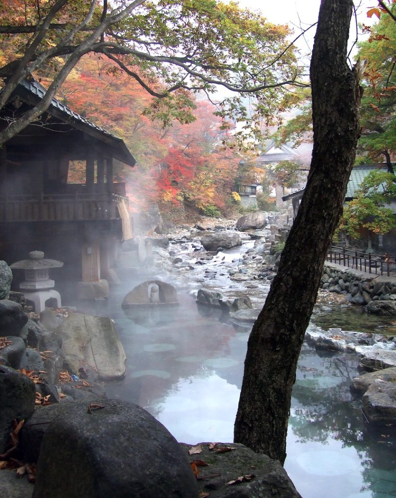

Hakone
Hakone is a town nestled within Japans beautiful mountain ranges, you may know one of the famous mountains as Mount Fuji. It is also well known for its amazing traditional onsen spa and the spectacular Lake Ashi and its red “Tori” gate overlooking it. Check out the sulphuric springs also for a smelly and unique experience and if you'd like try a “Thousand Year Egg”.
Mount Fuji
Mount Fuji is a famous active volcano that has become iconic and quite symbolic of Japan due to its beautiful snowy peak and the nature of how perfect it looks. It is the countries tallest peak sitting at 3,776 meters. Mount Fuji has been a sacred site for practicers of “Shinto” since the 7th century!
Lake Ashi
Lake Ashi is a crater lake directly below Mount Fuji. One can take a mini pirate ship cruise around and to the other side to the lake, which makes for a breathtaking view of the mountain ranges and lake. Whilst being able to immerse yourself in Japans history.
Onsen Spas

Onsen is the Japanese name for a hot spring, Hakone due to being surrounded by active volcanoes is home to many of these. If you’re seeking a traditional experience then take your pick from the many beautifully designed onsens around town, although “traditional” whilst being a culturally impressive experience does mean full nudity to participate. If you’re a westerner looking for a more private experience then I suggest the Hakone Kowakien Yunessun which is much more tourist friendly.
The Hakonetozan Line

The Hakonetozan Line is a train line that runs through Hakones beautiful mountain rages. If you are looking fro a scenic experience with minimal walking then this is perfect for you.